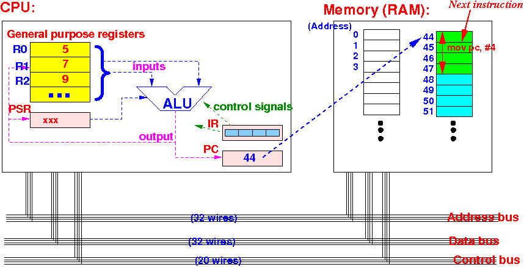
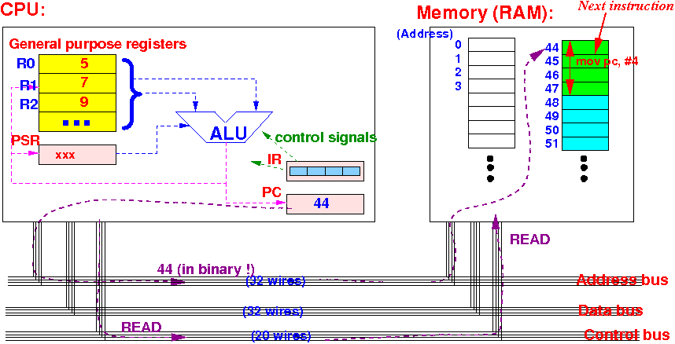
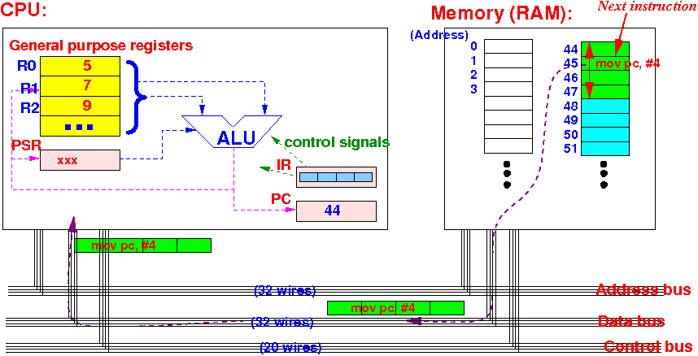
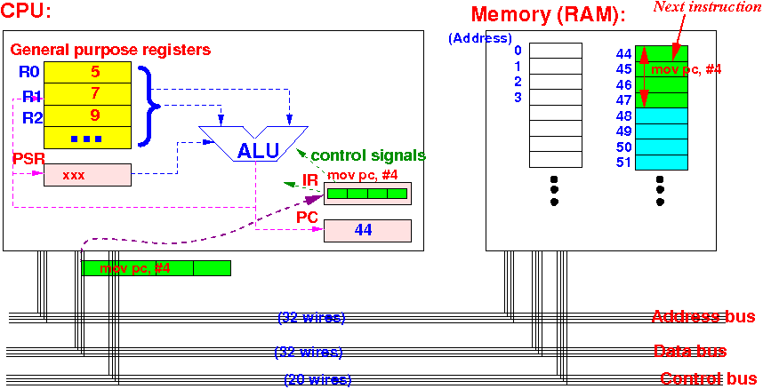
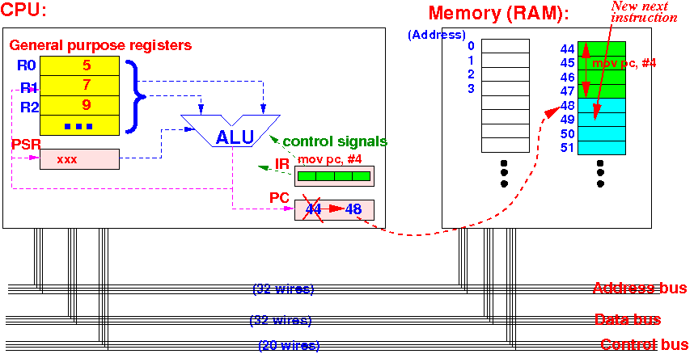
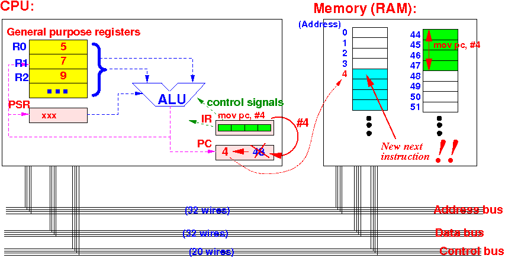

(Initial state: PC = 44 (bin !),
CPU just finished executing the instruction in IR)

(Instruction Fetch: CPU sends PC on address bus and issues READ command)

(Instruction Fetch: in response, memory sends content at address
(= instruction "mov pc, #4") to CPU)

(Instruction fetch: CPU stores the data
(= instruction "mov pc, #4")
in the IR register)

(CPU increments PC to point to new next instruction
- Instruction Fetch step ends)

("mov pc, #4" will update PC to 4 !!!
-- Next instruction will now be fetched from a new location !!!)